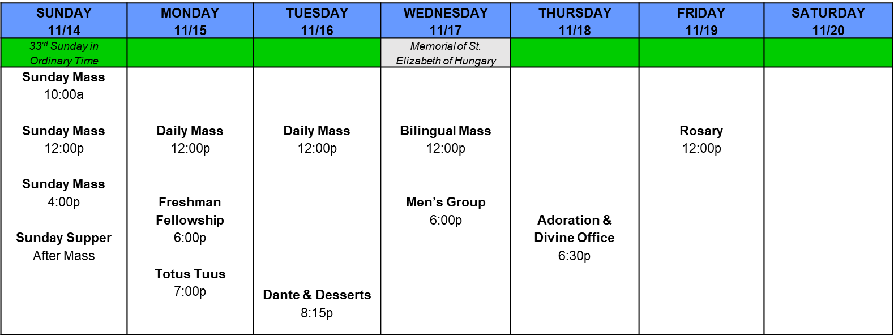

Contact: Valentina Osorio (vo8@rice.edu)
Save the date - Saturday, October 23 - for our one-day Fall retreat!! Get ready to take a nice break from your everyday routines to spend time with God and other Catholics. More details to come :)
Contact: Leslie Arrazolo (lka3@rice.edu)
This is a call to all the wonderful Latina ladies to join Totus Tuus! Our first meeting is Monday at 7pm in the Martel PDR. This small group is inspired by JPII's beautiful consecration to Mary. Join Leslie, Karina, and Alyssa in this small group as we share our common experiences and grow in relationship with our beloved Mother, and let her know that we are hers. Contact Leslie if you would like to be added to our group chat!
Contact: Karen Martinez Perez (kmm10@rice.edu)
There is no Women’s Group this week – but we will be meeting next week!
Sunday Mass is offered at 10a, Noon, and 4pm. Daily Mass will be offered Monday and Tuesday at Noon. Bilingual Mass will be offered at Noon on Wednesday.
If you're a student, join us for Sunday Supper after the 4pm Mass on Sunday!
More information about these events is listed below:

CSC | Mon. 6:00p - 7:00p | Contact: Joseph Paci, Katie Impelman (jpp5@rice.edu, kai3@rice.edu)
Are you new to Rice and looking to grow in your faith and get to know your fellow Catholics better? Come to Freshmen Fellowship! We meet one evening a week for dinner and group discussions centered on the faith.
Martel PDR | Mon. 7:00p - 8:00p | Contact: Leslie Arrazolo (lka3@rice.edu)
A call to all the wonderful Latina ladies to join Totus Tuus! This small group is inspired by JPII's beautiful consecration to Mary. Join Leslie, Karina, and Alyssa in this small group as we share our common experiences and grow in relationship with our beloved Mother, and let her know that we are hers. Text Leslie at (956) 443-7595 if you would like to be added to our group chat!
CSC | Tue. 8:15p - 9:00p | Contact: Mimi Tran (mimi.ricecm@gmail.com)
Join us weekly for 100 days of Dante as we read through The Divine Comedy and enjoy a sweet treat alongside our guided group discussion!
CSC | Wed. 6:00p - 7:00p | Contact: Nicholas Soria (nrs4@rice.edu)
Fellowship by and for men. Come to talk the faith together, and particularly to grow in the spiritual life. Group prayer, group reading, etc.
CSC | Thr. 5:30p - 6:30p | Contact: Trey Weltens (cmw20@rice.edu)
Join us for a 6-week guided reading of Fratelli Tutti, Pope Francis’ 2020 encyclical.
St. Mary's Chapel | Thr. 6:30p - 7:30p | Contact: Michael Katona (katona@rice.edu)
Come learn how to pray the Divine Office – a series of daily prayers which, along with the Mass, constitute the public prayer life of the Church. We will be praying the Vespers (evening prayer), followed by Adoration. If you are able, please download the iBreviary app to follow along with the hymns, antiphons, and readings.
Baker Fountain | Fri. 12:00p | Contact: Joseph Paci (jpp5@rice.edu)
Join us Fridays at noon outside of the Baker fountain to pray a rosary together!